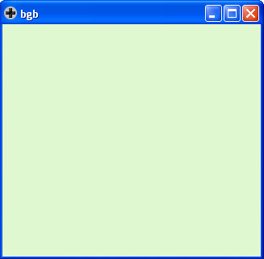

Steward
分享是一種喜悅、更是一種幸福
掌機 - Game Boy - C/C++ - 開發環境
參考資訊：
https://bgb.bircd.org/
http://gbdk.sourceforge.net/
http://sdcc.sourceforge.net/
https://github.com/Zal0/gbdk-2020
Build gbdk
$ sudo apt-get install subversion doxygen -y $ svn checkout -q -r 14865 svn://svn.code.sf.net/p/sdcc/code/trunk sdcc-14865 $ cd sdcc-14865/ $ curl -Lo gbdk-sdcc-patch-file https://github.com/gbdk-2020/gbdk-2020-sdcc/releases/download/patches/gbdk-4.3-nes_banked_nonbanked_no_overlay_locals_v8_combined.patch $ patch -p0 -f < gbdk-sdcc-patch-file $ cd sdcc $ ./configure --disable-shared --enable-gbz80-port --enable-z80-port --enable-mos6502-port --enable-mos65c02-port --disable-r800-port --disable-mcs51-port --disable-z180-port --disable-r2k-port --disable-r2ka-port --disable-r3ka-port --disable-tlcs90-port --disable-ez80_z80-port --disable-z80n-port --disable-ds390-port --disable-ds400-port --disable-pic14-port --disable-pic16-port --disable-hc08-port --disable-s08-port --disable-stm8-port --disable-pdk13-port --disable-pdk14-port --disable-pdk15-port --disable-ucsim --disable-doc --disable-device-lib $ make -j4 $ sudo make install $ cd $ git clone https://github.com/gbdk-2020/gbdk-2020 $ cd gbdk-2020 $ export SDCCDIR=/usr/local $ make $ sudo SDCCDIR=/usr/local make install
Build gambatte
$ cd $ wget https://github.com/steward-fu/website/releases/download/gb/src_gambatte-master.zip $ unzip src_gambatte-master.zip $ cd gambatte-master $ ./build_sdl.sh $ sudo cp gambatte_sdl/gambatte_sdl /usr/bin/
bgb
